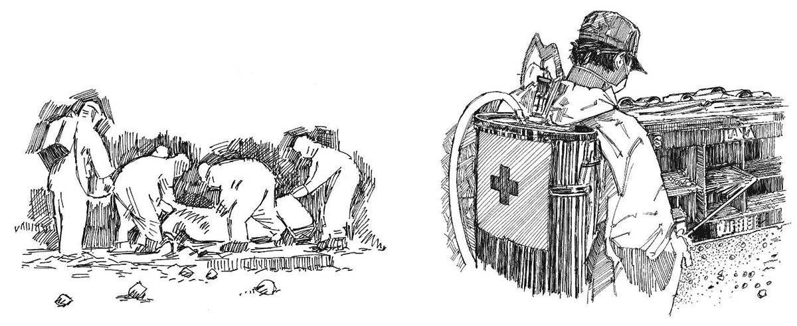

Resumen
- Algunas enfermedades, como el cólera y especialmente el Ébola, Marburgo, la fiebre de Lassa y la peste, siguen siendo infecciosas incluso después de la muerte.
- Por lo tanto, es esencial tener extremo cuidado al manejar los cuerpos de personas que han muerto a causa de estas enfermedades.
Lo que necesita saber
- Los cuerpos de las personas que han muerto de ciertas enfermedades deben ser enterrados de manera rápida y segura para proteger a otros, ya que estas enfermedades pueden propagarse a través del contacto con los cuerpos incluso después de la muerte.
- Los especialistas del Ministerio de Salud u otras organizaciones pueden estar disponibles para llevar a cabo tales entierros. Si este es el caso, usted debe continuar con la promoción de la salud y permitirles hacer su trabajo.
- El entierro de personas muertas es un tema delicado en cualquier comunidad. Usted debe tener cuidado de no molestar a la gente; ayude a que comprendan por qué la persona que aman debe ser enterrada de una manera diferente.
- Brinde apoyo psicosocial a las familias de los fallecidos. (Ver herramienta de acción 19).
Enterrar cadáveres puede ser un peligro para la salud. Si tiene que hacerlo, siempre pida ayuda y consejo profesional.
Recuerde que el deber principal de los voluntarios de la Cruz Roja y de la Media Luna Roja es promover la salud en la comunidad. Usted puede hacer una mayor diferencia de esta manera que de cualquier otra forma.
Entierro seguro de cadáveres
- Hable con los líderes de la comunidad y busque su apoyo para lo que está haciendo.
- Respete las tradiciones sin comprometer la seguridad.
- No se involucre directamente si los entierros son realizados por otros. Si se le solicita que asista, asegúrese de haber recibido la capacitación adecuada y de comprender los procedimientos correctos para llevar a cabo un entierro seguro.
- Realice todas las actividades con calma y respeto.
- Siempre cuídese, ante todo, para protegerse (ver herramienta de acción 5) y use el equipo de protección personal siempre que sea requerido (ver herramienta de acción 6).
- Desinfecte la habitación y destruya las pertenencias (ropa) de una persona que ha muerto de Ébola, fiebre de Marburgo, fiebre de Lassa y peste.

Entierro seguro de cadáveres. Desinfección.